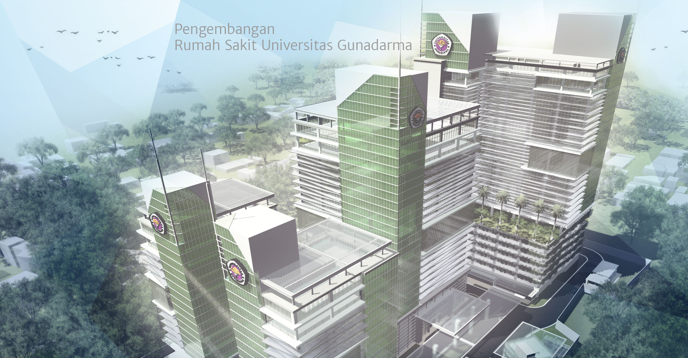
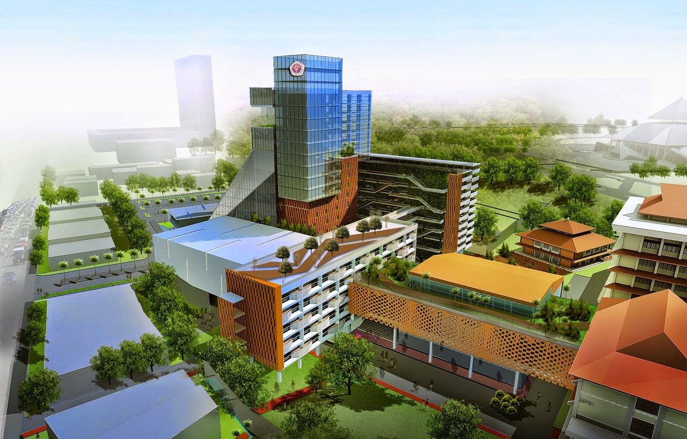
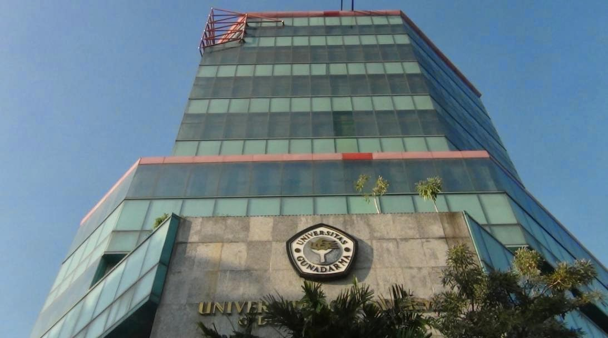

Sejarah

Pada 7 Agustus 1981 berdiri Program Pendidikan Ilmu Komputer (PPIK) di Jakarta yang tiga tahun kemudian berubah menjadi Sekolah Tinggi Manajemen Informatika dan Komputer (STMIK) Gunadarma. Enam tahun kemudian, tepatnya pada 13
Januari 1990, berdiri Sekolah Tinggi Ilmu Ekonomi Gunadarma (STIE Gunadarma). Pada tahun 1993, STMIK dan STIE membuka Program Magister dengan konsentrasi Manajemen Sistem Informasi untuk STMIK serta Magister Manajemen untuk STIE.
Selanjutnya, melalui S.K. Dirjen DIKTI No.92/Kep/Dikti/1996 tertanggal 3 April 1996, STMIK dan STIE Gunadarma melebur menjadi UNIVERSITAS GUNADARMA bersama dengan empat fakultas baru yaitu Fakultas Teknologi Industri, Fakultas
Teknik Sipil dan Perencanaan, Fakultas Psikologi, dan Fakultas Sastra. Membuka milenium baru, Universitas Gunadarma membuka Program Doktor Ilmu Ekonomi berdasarkan ijin Dirjen Dikti Departemen Pendidikan Republik Indonesia No.
55/DIKTI/2000 yang diikuti dengan pembukaan Program Doktor Teknologi Informasi berdasarkan ijin Dirjen Dikti Departemen Pendidikan Republik Indonesia No. 3716/P/T/2002. Setelah melalui perjuangan panjang dalam menghadapi berbagai
tantangan, Universitas Gunadama telah menjelma menjadi salah satu perguruan tinggi swasta yang berbasis teknologi informasi dan komunikasi terkemuka di Indonesia. Pengalaman selama 25 tahun yang diiringi pengabdian dan dedikasi
tenaga pengajar; komitmen yayasan dan pimpinan; pengadaan fasilitas pembelajaran serta kepercayaan masyarakat, Universitas Gunadarma terus berupaya menghasilkan lulusan yang berguna dan bisa mendarmabaktikan kompetensinya demi
membangun masa depan bangsa yang lebih baik.
Fakultas dan Program Studi
| Jenjang |
Fakutas |
Program Studi |
| Diploma/Vokasi |
Akuntansi |
D3 Akuntansi |
| Kebidanan |
D3 Kebidanan |
| - |
D3 Manajemen Informatika |
| - |
D3 Manajemen Keuangan |
| - |
D3 Manajemen Pemasaran |
| - |
D3 Teknik Komputer |
| Sarjana |
Sastra |
Sastra Inggris |
| Sastra Tiongkok |
| Pariwisata |
| Kedokteran |
Kedokteran |
| Farmasi |
Farmasi |
| Psikologi |
Psikologi |
| Ilmu Komunikasi |
Ilmu Komunikasi |
| Ilmu Komputer dan Teknologi Informasi |
Sistem Informasi |
| Sistem Komputer |
| Ekonomi |
Manajemen |
| Akuntansi |
| Ekonomi Syariah |
| Teknik Sipil dan Perencanaan |
Teknik Sipil |
| Arsitektur |
| Desain Interior |
| Teknologi Industri |
Informatika |
| Teknik Elektro |
| Teknik Mesin |
| Teknik Industri |
| Agroteknologi |
| Pascasarjana |
|
Doktor Ilmu Ekonomi |
| Psikologi |
Doktor Ilmu Psikologi |
| Ilmu Komputer dan Teknologi Informasi |
Doktor Teknologi Informasi |
| Ilmu Komunikasi |
Magister Ilmu Komunikasi |
| Ekonomi |
Magister Manajemen |
| Psikologi |
Magister Psikologi |
| Magister Psikologi Profesi |
| Sastra |
Magister Sastra Inggris |
| Ilmu Komputer dan Teknologi Informasi |
Magister Manajemen Sistem Informasi |
| Teknologi Industri |
Magister Teknik Elektro |
| Teknik Sipil dan Perencanaan |
Magister Teknik Sipil |
Persebaran Kampus
- Kampus A (Kampus Kenari) berada di Jl. Kenari nomor 13, Jakarta Pusat.
- Kampus B (Kampus Salemba Bluntas) berada di Jl. Salemba Bluntas, Jakarta Pusat
- Kampus C (Kampus Salemba) berada di Jl. Salemba Raya nomor 53, Jakarta Pusat
- Kampus D (Kampus Depok) berada di Jl. Margonda Raya Pondok Cina, Depok
- Kampus E (Kampus Kelapa Dua) berada di Jl. Akses Kelapa Dua Kelapa Dua, Cimanggis
- Kampus G (Kampus Laboratorium Kelapa Dua) berada di Jl. Akses Kelapa Dua Kelapa Dua, Cimanggis Phone
- Kampus H (Kampus Laboratorium Kelapa Dua) berada di Jl. Akses Kelapa Dua Kelapa Dua, Cimanggis
- Kampus H2 (Kampus Simatupang) berada di Jl. Tahi Bonar Simatupang Kavling. 38, Jakarta Selatan
- Kampus J1 berada di Jl. KH. Noer Ali, Kalimalang, Jakasampurna, Bekasi Barat
- Kampus J3 (Kampus Kalimas) berada di Jl. Raya Kalimalang, Bekasi
- Kampus J4 (Kampus Kemang Pratama) berada di Jl. Kemang Pratama Raya No.13, Jakarta Timur
- Kampus J5 (Kampus Cakung ) berada di Jl. Sentra Primer Baru Timur, Jakarta Timur
- Kampus L (Kampus Cengkareng) berada di Jl. Raya Kamal Outring Nomor. 75, Jakarta Barat
- Kampus K (Kampus Karawaci) berada di Jl. Kelapa Dua Raya No.93, Tangerang
Kampus Utama

Kampus utama Universitas Gunadarma adalah kampus D atau kampus Depok yang berlokasi Berlokasi Di jln Margonda Raya No 100 Pondok Cina, Depok 16424 Jawa Barat - Indonesia
Kampus Pertama

Kampus pertama Universitas Gunadama adalah kampus A atau kampus Kenari yang Berlokasi Di jln Kenari No 13 Jakarta Pusat 10430 Jakarta - Indonesia